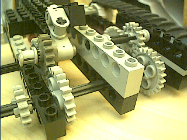
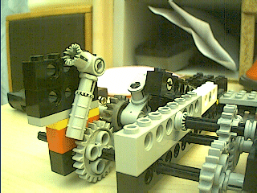
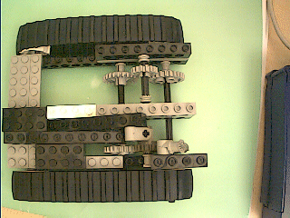

Robbert
Mattijs
van Mattijs, Stef en Robbert Mientki
januari 2001
| Lego-Knex
Robbert Mattijs |
Lego vooruit en draaien met 1 motor
van Mattijs, Stef en Robbert Mientki januari 2001 |
 |
de truuk is dat het kleine tandwiel door zijn eigen gewicht tussen de grote tandwielen invalt. |
|  | aan de andere kant zit een gelijke aandrijving maar met een vaste as
de voorste as zijn twee assen, links een en rechts een. |
|  | als extra rem een ratel,
dat is niet altijd nodig. |
|  | boven aanzicht |